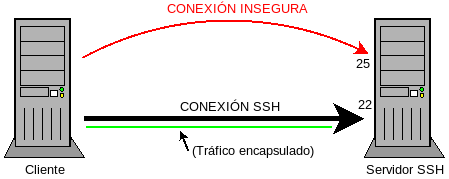
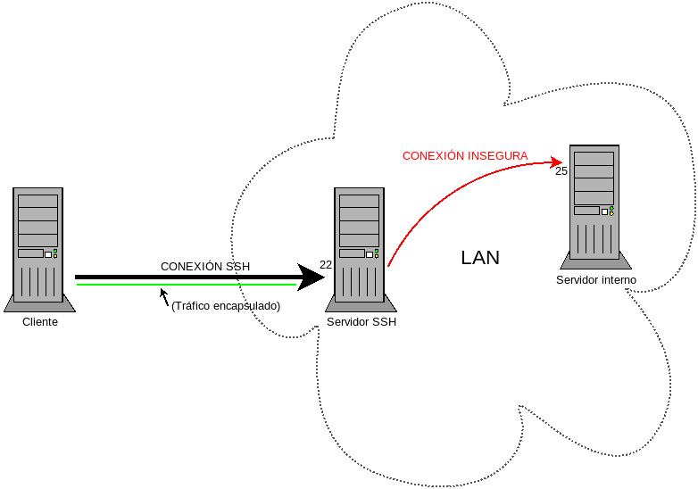
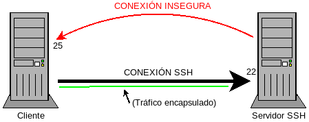
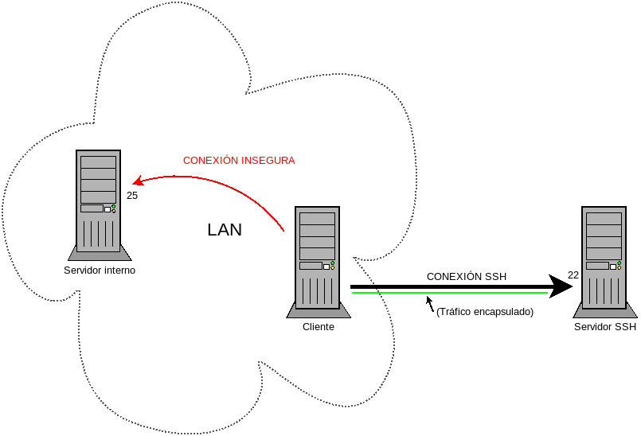
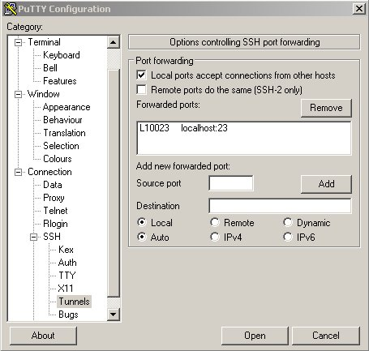

4.5.5. Túneles¶
Los túneles son una de las funcionalidades más potentes y útiles que brinda el protocolo SSH:
consiste en hacer pasar el tráfico de otro protocolo (generalmente inseguro) a través de la conexión SSH. En el ejemplo del dibujo, la conexión al puerto 25, en vez de hacerse directamente, se hace pasar por la conexión SSH. Al ser esta cifrada, toda la comunicación es cifrada y consecuente no habrá problemas de intercepcion del tráfico.
No sólo esto: el servicio tunelizado no tiene por qué encontrase en la misma máquina que el servidor, por lo que también permite hacer accesibles servicios que de otro modo serían inaccesibles. Por ejemplo:
En el gráfico se supone que el servidor SSH es accesible al cliente, pero no el servidor interno. Es evidente, entonces, que es el túnel es que permite establecer comunicación entre el cliente y el servidor interno.
4.5.5.1. Túnel local¶
O también llamado directo, es aquel que tuneliza un servicio de red de manera que dirige el tráfico de un servicio local al servidor a un puerto del cliente. Por tanto, son túneles que hacen aparecer en un puerto del cliente un servicio que escucha en un puerto accesible por el servidor. Los dos ejemplos con que se presentó el concepto son túneles locales.
Para establecer el túnel de la primera figura podríamos haber hecho lo siguiente:
pepe@cliente$ ssh -N -L 10025:localhost:25 usuario@servidor
La opción -N, simplemente hace que la sesión no sea interactivo, de manera
que tras la identificación no se abrirá ninguna sesión de bash y el cliente
quedará a la espera de que en algún momento, matemos la sesión con Ctrl+C[1]. Tiene utilidad si lo que pretendemos hacer es el túnel y no entrar en el
servidor propiamente.
La opción -L es la encargada de crear el túnel local y significa: «haz
aparecer en el puerto 10025 del cliente el puerto 25 de localhost (o sea, del
servidor)». Consecuentemente, si queremos acceder comunicarnos con el puerto 25
del servidor simplemente podremos hacer:
pepe@cliente$ telnet localhost 10025
o mejor, conectarnos mediante un cliente de correo que nos permita sacar de ello.
El túnel de la segunda figura se realiza exactamente igual, excepto por el hecho de que el puerto 25 ya no es el de localhost sino el del servidor interno que tendrá una ip o un nombre. Suponiendo que desde el servidor podamos acceder a él mdiante el nombre interno, la orden quedaría así:
pepe@cliente$ ssh -N -L 10025:interno:25 usuario@servidor
Mientras se mantenga la comunicación con el servidor, se mantendrá el túnel.
Es posible definir los túneles en la configuración, en vez de en línea de comandos:
Host svm
Hostname servidor
User usuario
LocalForward 10025 localhost:25
Nota
Obsérverse que en este caso entre el puerto del cliente y el nombre de la máquina donde está el servicio hay espacio y no dos puntos.
Nota
Al realizar un túnel, sólo es posible conectarse al puerto destino
desde el propio cliente a través de su interfaz de loopback. Si se quiere
hacer accesible este puerto a máquinas externas entonces es necesario la
opción -g en la línea de comandos o bien usar la directiva:
GatewayPorts yes
en ~/.ssh/config.
4.5.5.2. Túnel remoto¶
O también llamado inverso, es aquel que tuneliza un servicio de red de manera que dirige el tráfico de un servicio accesible por el cliente a un puerto del servidor. Por tanto, estos túneles hacen aparecer en un puerto del servidor un servicio que escucha en un puerto accesible por el cliente, es decir:
La constitución del túnel es semejante al anterior:
pepe@cliente$ ssh -N -R 10025:localhost:25 usuario@servidor
en este caso, hacemos aparecer en el puerto 10025 del servidor un puerto situado en el puerto 25 del propio cliente (localhost)[2]
Como en el caso anterior en el servicio no tiene por qué encontrarse en el mismo cliente:
para constituir el cual podemos hacer:
pepe@cliente$ ssh -N -R 10025:interno:25 usuario@servidor
De nuevo, podemos establecer el túnel usando el fichero de configuración, en vez de argumentos de la línea de comandos:
Host svm
Hostname servidor
User usuario
RemoteForward 10025 localhost:25
Nota
Como en los túneles locales, el servicio redirigido sólo será
accesible por la propia máquina en la que aparece (el servidor). Si quiéramos
hacerlo accesible a otras máquinas deberíamos incluir en el fichero de
configuración del servidor (/etc/ssh/sshd_config) la directiva:
GatewayPorts yes
También es posible delegar en el cliente la decisión. Para ello debe fijarse en el servidor:
GatewayPorts clientspecified
De esta forma, cuando nos conectemos:
pepe@cliente$ ssh -N -R 10025:interno:25 usuario@servidor
sólo se podrá acceder al puerto 10025 desde el propio servidor, pero si hacemos:
pepe@cliente$ ssh -N -R :10025:interno:25 usuario@servidor
Aplicación práctica
Supongamos que en nuestra empresa un comercial tiene un portátil, pero es un poco patán (informáticamente hablando) y cada cierto tiempo requiere que accedamos a su ordenador para que le reparemos cualquier asunto de software. Dada su condición, es muy probable que en muchas de estas ocasiones, no se encuentre en la sede de la empresa y, por tanto, no pueda llevarnos físicamente a nuestro puesto de trabajo. Un modo de permitir la administración remota de este equipo es la siguiente:
En el servidor SSH, confinamos al comercial en su directorio personal, lo cual significa que en
/etc/ssh/sshd_config:Match User comercial_patan ChrootDirectory %h
Para que funcione el enjaulamiento debemos, además, hacer que el administrador sea el propietario de su directorio personal en el servidor:
# chown root /home/comercial_patanInstalamos en su portátil un servidor telnet[3].
Deshabilitamos el acceso externo a dicho servidor, añadiendo en el fichero
/etc/hosts.deny, lo siguiente:in.telnetd: ALL except LOCALAñadimos al fichero de configuración del cliente SSH las siguientes líneas:
Host admin Hostname servidor.empresa.com User comercial_patan RemoteForward 10023 localhost:23
Creamos el alias:
alias ssh='ssh -N'Le damos una contraseña y le decimos que cuando requiera que le apañemos algún aspecto del ordenador, ejecute:
comerciaL@portatil$ ssh adminy a continuación nos llame por teléfono para avisarnos y darnos cuenta del error.
Si sigue estos paso, nosotros desde la sede podremos gestionarle el equipo simplemente con:
$ telnet localhost 10023
sin necesidad siquiera de saber cuál es su ip en ese momento.
4.5.5.3. Túnel dinámico¶
Consiste en convertir el servidor en un proxy SOCKS. La utilidad de este proxy consiste en que si configuramos un programa para que lo use, el programa accederá a internet a través del proxy. Dicho de otro modo, al establecerlo:
pepe@cliente$ ssh -D 8080 usuario@servidor
lograremos que aparezca en el propio puerto 8080 del cliente un proxy SOCKS; y, por tanto, la orden:
pepe@xcliente$ curl -s --socks5 localhost:8080 -dump https://api.ipify.org/?format=text
80.80.80.80
nos devolverá la ip pública del servidor SSH, no la aquella asociada a nuestro cliente.
Hay programas, como curl, chromium[4] o firefox (véanse en la pestaña de Red la configuración de la conexión), que permiten especificar explicitamente un proxy; otros, en cambio, no, pero para ellos es posible utilizar la orden tsocks:
# apt-get install tsocks
El programa se configura en /etc/socks.conf, pero si no tenemos permisos
de administración, podemos usar otra ubicación:
pepe@cliente$ cat > .config/tsocks.conf
server = 127.0.0.1
server_port = 8080
server_type = 5
y usar la variable de ambiente TSOCKS_CONF_FILE para obligar a que se use esta ruta:
pepe@cliente$ TSOCKS_CONF_FILE=~/.config/tsocks.conf tsocks
pepe@cliente$
Si el programa se usa sin más, accederemos a una sesión de bash en que todos los programas que ejecutemos en ella, usaran el proxy. También se puede ejecutar un único comando:
pepe@cliente$ TSOCKS_CONF_FILE=~/.config/tsocks.conf tsocks wget -q -O - https://api.ipify.org/?format=text'
80.80.80.80
Nota
Como la conexión se realiza desde el servidor SSH, es posible
acceder a direcciones locales a tal servidor. Por ejemplo, si el servidor
estuviera en la red 172.22.0.0/16 y hubiera en ella un servidor web en la
ip 172.22.0.1, podríamos acceder a este servidor del siguiente modo:
pepe@cliente:~$ TSOCKS_CONF_FILE=~/.config/tsocks.conf tsocks w3m http://172.22.0.1
La directiva en la configuración del cliente para crear túneles dinámicos (correspondiente LocalForward o RemoteForward) es DynamicForward:
DynamicForward 8080
4.5.5.4. Configuración en putty¶
Conceptualmente, todo es exactamente igual y sólo es necesario saber dónde puede encontrarse la creación de túneles:
Notas al pie
| [1] | También se puede añadir la opción -f, que arranca en segundo plano la
orden; de este modo, no queda la terminal ocupada. |
| [2] | Al ser accesible el servicio por el cliente y no por el servidor, para el nombre (o la ip) se toma como referencia el cliente. Por esto, en este caso, localhost es el cliente. |
| [3] | Si se trata de un comercial es más que probable que lo que necesitemos sea entrar en un entorno gráfico. En ese caso, más que instalar un servidor telnet, habría que instalar un servidor VNC. |
| [4] | chromium puede usar el proxy arrancándolo así: $ chromium --proxy-server="socks://localhost:8080"
|